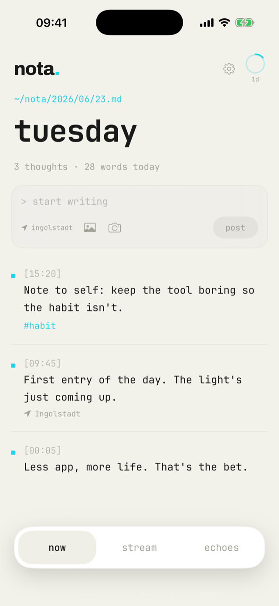
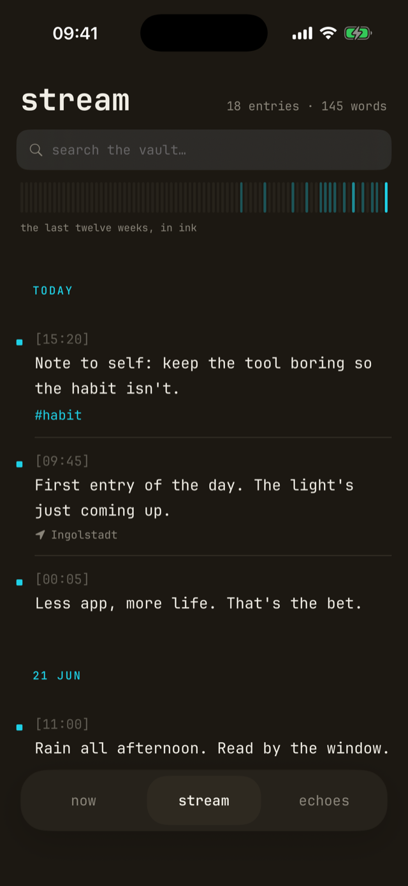
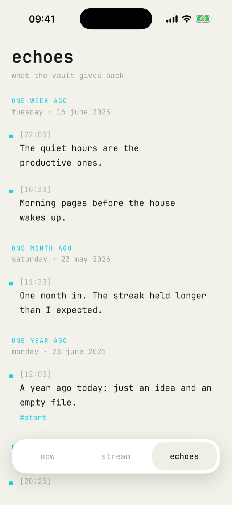

a lab22 app · private ios journal



The feed grows. A streak ring keeps you honest — not punishing, just present. You build the habit because the friction is gone.
No server holds your journal. iCloud handles the sync; nota handles the display.
When you want to find what you wrote on a specific day, you open the app or the file — your choice.
Tags when you want them. A geotag if you're the kind of person who remembers where you were. Markdown underneath, so nothing is ever trapped.
Mood check-ins. Day wrap-ups. Multiple habit rings. Stats that mean something.
All of it coming post-launch.